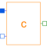

ConstantActuatorSimple behavioural actuator model for system simulation |

|
Diagram
{kind=link}
Information
This information is part of the Modelica Standard Library maintained by the Modelica Association.
Similar to rotational DC-Motors, the electro-mechanical energy conversion of translatory electrodynamic actuators and generators of moving coil and moving magnet type can be described with the following two converter equations:
F = c * i
V_i = c * v
with electrodynamic or Lorentz force F, converter constant c, current i, induced back-emf V_i and armature velocity v. The model is very similar to the well-known behavioural model of a rotational one-phase DC-Machine, except that it is for translatory motion. For a moving coil actuator with a coil inside an air gap with flux density B and a total wire length l inside the magnetic field, the converter constant becomes
c = B * l.
The converter constant c as well as coil resistance R and inductance L are assumed to be known, e.g., from measurements or catalogue data. Hence this model is well-suited for system simulation together with neighbouring subsystems, but not for actuator design, where the motor constant is to be found on base of the magnetic circuit's geometry, material properties and winding data. See PermeanceActuator for a more accurate model of this actuator that is based on a magnetic network. Due to identical connectors, both models can be used in system simulation, e.g. to simulate a stroke as demonstrated in ArmatureStroke.
Parameters (8)
| k |
Value: 3.88 Type: ElectricalForceConstant (N/A) Description: Converter constant |
|---|---|
| R |
Value: 2.86 Type: Resistance (Ω) Description: Coil resistance |
| L |
Value: 0.0051 Type: Inductance (H) Description: Coil inductance at mid-stroke |
| m_a |
Value: 0.012 Type: Mass (kg) Description: Armature mass |
| c |
Value: 1e11 Type: TranslationalSpringConstant (N/m) Description: Spring stiffness between impact partners |
| d |
Value: 400 Type: TranslationalDampingConstant (N·s/m) Description: Damping coefficient between impact partners |
| x_min |
Value: -4e-3 Type: Position (m) Description: Minimum armature position |
| x_max |
Value: 4e-3 Type: Position (m) Description: Maximum armature position |
Connectors (3)
| p |
Type: PositivePin Description: Electrical connector |
|
|---|---|---|
| n |
Type: NegativePin Description: Electrical connector |
|
| flange |
Type: Flange_b Description: Flange of component |
Components (4)
| r |
Type: Resistor Description: Coil resistance |
|
|---|---|---|
| armature |
Type: TranslatoryArmatureAndStopper Description: Armature inertia with stoppers at end of stroke range |
|
| l |
Type: Inductor Description: Coil inductance |
|
| electroTranslationalConverter |
Type: TranslationalEMF |
Used in Examples (2)
|
Modelica.Magnetic.FluxTubes.Examples.MovingCoilActuator Comparison of the force-current characteristics of both converter models with armature blocked at mid-position |
|
|
Modelica.Magnetic.FluxTubes.Examples.MovingCoilActuator Armature stroke of both moving coil actuator models after a voltage step at time t=0 |